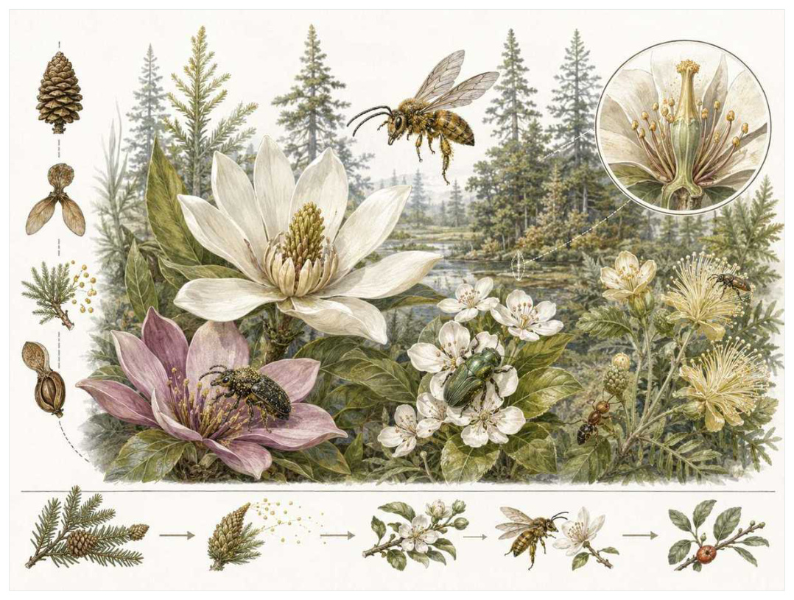

第13篇 · 白垩纪：羽毛、花与高度复杂的恐龙世界 · 第 43 章
花与昆虫共同演化：白垩纪陆地底盘被重写
本篇主题:白垩纪：羽毛、花与高度复杂的恐龙世界
被子植物扩张，昆虫关系网加密，恐龙与鸟类继续分化。

本章科学复原配图 （用于呈现结构与生态关系, 不替代化石照片、测量数据与系统发育证据。）
把时间拨到早白垩世至晚白垩世。这一章不只列出当时的生物，而要追问环境、能量和生态关系怎样共同塑造身体。被子植物的扩张不是一次让所有陆地立刻开满现代花朵的替换。早期种类多为小型草本、灌木或湿地植物，随后在叶脉、导管、繁殖周期和果实传播上形成多样优势。花把花粉转移与动物行为连接，果实又把种子传播外包给动物。甲虫、蜂类、蛾类、双翅目和其他昆虫与植物相互选择，陆地食物网因此变得更细密、更季节化。
进入这个时代
若真正置身其中，首先感受到的是介质本身：水是否含氧、地面是否稳定、空气是否干燥、植被是否遮挡视线。身体结构只有放在这些条件中才有意义。早白垩世河岸边，针叶树和蕨类仍占很大比例，但低矮开花植物在扰动地面快速完成生命周期。昆虫被气味、颜色和营养吸引，把花粉带到另一株植物；食叶昆虫又迫使植物改变毒素、叶片更新和防御。共同演化不是和谐合作，而是互利、欺骗与军备竞赛并存。
在“花与昆虫共同演化：白垩纪陆地底盘被重写”所覆盖的时间里，不能把地理与气候当作固定背景。海陆位置、海平面、河流或植被结构会改变资源可达性，同一性状在不同地区可能得到完全相反的选择结果。
以花与昆虫共同演化：白垩纪陆地底盘被重写为例，演化的单位是种群而不是单个英雄。个体结构影响生存，但地理分布、繁殖速度、幼体死亡率和种群规模决定变异能否保留下来。化石中最醒目的成年骨架，未必是决定支系命运的阶段。在本章中，这一约束具体落在“短生命周期让被子植物迅速占据洪水、火灾后的裸地”这条关系上。
再从早白垩世至晚白垩世的时间尺度看，生态位不是预先摆好的空格，而是生物与环境共同形成的关系。掘穴者改变沉积物，森林固定河岸，礁体构建者制造硬底，巨型植食者改变火与养分。生物占据生态位的同时也在制造新的生态位。 它与“花、封闭胚珠与果实”共同决定了后续变化可以沿哪些路径发生。
生态系统如何运转
本章的一条关键关系是“短生命周期让被子植物迅速占据洪水、火灾后的裸地”。它首先改变资源在个体之间的分配：能更早发现、处理或占据资源的种群获得收益，而另一方会承受新的选择压力。
围绕“短生命周期让被子植物迅速占据洪水、火灾后的裸地”，这种关系没有永恒赢家。收益随密度和环境改变：防御越常见，攻击专门化的价值越高；资源越稀少，维持昂贵结构的代价越大。化石记录中的扩张与衰退，常是这种动态平衡被外部事件打破的结果。 对花与昆虫共同演化：白垩纪陆地底盘被重写而言，这一后果还会与“动物传粉提高稀疏种群间花粉定向转移”相互放大或抵消。
“动物传粉提高稀疏种群间花粉定向转移”体现了生态系统的反馈性。一方结构或行为稍有改变，另一方的防御、逃避、繁殖和空间选择就会重新排列，长期累积后才形成宏观演化差异。
围绕“动物传粉提高稀疏种群间花粉定向转移”，它的长期后果通常通过幼体和繁殖体现。成年个体即使能抵抗一次危机，只要巢址、配子、幼体食物或成长季节被破坏，种群仍会在数代内下降。 对花与昆虫共同演化：白垩纪陆地底盘被重写而言，这一后果还会与“果实和种子结构把鸟、哺乳动物与植物扩散连接”相互放大或抵消。
在早白垩世至晚白垩世，“果实和种子结构把鸟、哺乳动物与植物扩散连接”把环境条件转化为生物之间的差异。相同气候并不会平均影响所有支系，因为它们利用的食物、水层、底质和繁殖地点并不相同。
围绕“果实和种子结构把鸟、哺乳动物与植物扩散连接”，还要考虑空间异质性。一项在浅海、河谷或林冠有效的策略，移到深水、干旱内陆或开阔地便可能失去优势。因此同一支系常出现区域性扩张，而不是全球同步取代。 对花与昆虫共同演化：白垩纪陆地底盘被重写而言，这一后果还会与“短生命周期让被子植物迅速占据洪水、火灾后的裸地”相互放大或抵消。
关键演化创新
在“花与昆虫共同演化：白垩纪陆地底盘被重写”中，围绕“花、封闭胚珠与果实”，“花、封闭胚珠与果实”是本章的重要演化创新。创新并不等于某一代突然长出完整器官，它通常由旧结构的尺寸、连接、材料和表达时序逐步变化，并在每个中间阶段承担可用功能。 它首先需要在早白垩世至晚白垩世的生态条件下产生可测量收益。
就“花、封闭胚珠与果实”而言，研究者通过近缘支系比较、发育同源、关节活动、微观组织和出现顺序重建这条路径。真正有价值的过渡化石不是“半成品”，而是证明中间组合可以独立生活。 本章把它与“高效叶脉和导管系统”并列，是为了显示复杂性状往往依赖多部分协同。
在“花与昆虫共同演化：白垩纪陆地底盘被重写”中，围绕“高效叶脉和导管系统”，这一结构的历史应按性状拆开。支撑、感觉、供能和控制往往不是同时成熟，化石会显示镶嵌状态：某一部分已接近后来的形态，其他部分仍保留祖征。 它首先需要在早白垩世至晚白垩世的生态条件下产生可测量收益。
就“高效叶脉和导管系统”而言，它的成功具有条件性。环境稳定时，专门化可提高效率；危机到来时，同一专门化可能限制食物和栖息地选择。演化创新因此既能开启辐射，也能制造新的脆弱性。 本章把它与“昆虫传粉与化学防御网络”并列，是为了显示复杂性状往往依赖多部分协同。
在“花与昆虫共同演化：白垩纪陆地底盘被重写”中，围绕“昆虫传粉与化学防御网络”，“昆虫传粉与化学防御网络”是本章的重要演化创新。创新并不等于某一代突然长出完整器官，它通常由旧结构的尺寸、连接、材料和表达时序逐步变化，并在每个中间阶段承担可用功能。 它首先需要在早白垩世至晚白垩世的生态条件下产生可测量收益。
就“昆虫传粉与化学防御网络”而言，这一变化还可能在多个支系中独立发生。若功能相似而解剖来源不同，就是趋同；若结构来自共同祖先但功能改变，则属于同源结构的分化。二者不能仅靠外观判断。 本章把它与“花、封闭胚珠与果实”并列，是为了显示复杂性状往往依赖多部分协同。
生命群像：把物种放回生态网络
古果（Archaefructus liaoningensis）
从外形看，古果（Archaefructus liaoningensis）最容易被记住的是细长轴上排列雄蕊和心皮，缺少显眼花瓣。它生活在早白垩世，大小约水生草本，植株几十厘米，承担浅水环境的早期被子植物这一生态功能。把年代、体型和功能放在一起，才能避免把奇特形态当成无意义装饰。
对古果而言，从种群角度看，偶发捕猎和个体伤病远不如长期繁殖率重要。广泛分布的普通个体比一具异常巨大的标本更能代表支系，然而普通个体往往较少进入公众叙事。研究者必须防止把化石收藏偏好误当成古代丰度。 这使“细长轴上排列雄蕊和心皮，缺少显眼花瓣”不能脱离其浅水环境的早期被子植物角色来理解。
支持该解释的材料包括辽西完整植株支持早期水生生活，但其是否代表最基干被子植物已不再确定。若不同证据出现冲突，应优先报告范围而不是强行给出单值。例如体长会随参照类群变化，运动能力会随软组织假设变化，系统位置也会随新增性状重新计算。
由古果这个案例看，它也展示专门化的双面性：结构在稳定环境中提高效率，却可能在气候、食物或竞争格局突变时限制转向。灭绝不是对设计的道德评分，而是性状、地理范围和偶然事件相遇后的历史结果。 它在早白垩世留下的记录，因此同时是第43章所讨论的形态史和生态史的一部分。
蒙特塞克花（Montsechia vidalii）
蒙特塞克花（Montsechia vidalii）是早白垩世的一名真实生态成员，而不是通往后代的抽象过渡。它约有小型水生植物，以淡水水体中的早期开花植物的方式获取资源；无明显花瓣、封闭心皮和水生枝条展示早期形态多样反映了其祖先历史与局部选择压力共同留下的结果。
对蒙特塞克花而言，把它放回群落后，结构的意义更清楚。食物并不会平均分布，水深、植被高度、底质和季节把资源切成小块；它的身体让其中一部分资源可被利用，也使它与近缘种错开生态位。种群命运还取决于幼体能否成长、繁殖地点是否稳定以及灾害后是否仍有避难所。 这使“无明显花瓣、封闭心皮和水生枝条展示早期形态多样”不能脱离其淡水水体中的早期开花植物角色来理解。
我们之所以能够作出上述判断，主要因为化石重解释支持被子植物身份，具体系统位置仍有范围。单一结构通常有多种功能解释，所以还要查看磨损、病理、肌肉附着、沉积环境和近缘比较。计算模型能排除不可能姿势，却不能自动恢复没有保存的软组织。
由蒙特塞克花这个案例看，面对仍有争议的细节，负责任的复原不是停止讲述，而是标注证据等级。形态、年代和亲缘可较确定，具体姿势、叫声、求偶和群猎则按材料降级；新标本会在这些边界内继续改写认识。 它在早白垩世留下的记录，因此同时是第43章所讨论的形态史和生态史的一部分。
白垩纪蜜蜂近亲（Melittosphex burmensis）
若把镜头从时代拉近到个体，白垩纪蜜蜂近亲（Melittosphex burmensis）会首先进入视野。它生活于中白垩世琥珀，体型约约3毫米。作为携粉蜂类候选，它依靠兼具黄蜂和蜜蜂特征，足部可能具携粉结构与环境和其他生物发生关系。
对白垩纪蜜蜂近亲而言，同域物种的存在迫使它分割时间与空间。相似牙齿不一定吃完全相同的食物，相似四肢也可能适应不同底质；微磨损、同位素和伴生群落常能揭示这种细分。环境改变时，原本减少竞争的专门化又可能成为迁移和改食的障碍。 这使“兼具黄蜂和蜜蜂特征，足部可能具携粉结构”不能脱离其携粉蜂类候选角色来理解。
其复原依赖标本极少且分类受争论，说明早期蜂演化记录仍不完整。年代和保存形态通常属于较强证据，体重、速度、颜色和社会行为则需要额外假设。书中把这些层次拆开，是为了让读者知道哪些可视为事实，哪些仍应等待更多材料。
由白垩纪蜜蜂近亲这个案例看，它不是祖先链条上必须跨过的一格。演化树中同时存在许多近缘支系，只有少数留下后代；旁支化石同样关键，因为它们显示某组性状出现的顺序和可行范围。 它在中白垩世琥珀留下的记录，因此同时是第43章所讨论的形态史和生态史的一部分。
长喙蝎蛉类（Aneuretopsychidae）
长喙蝎蛉类（Aneuretopsychidae）存在于侏罗纪至白垩纪。现有材料显示其大小约翼展数厘米，生态位置接近可能吸食裸子植物传粉滴的长喙昆虫。长口器表明昆虫传粉在花出现前已与裸子植物建立让它成为理解本章主题的合适案例，但不意味着同一类群所有成员都采用相同策略。
对长喙蝎蛉类而言，它的成功不需要在所有性能上压倒其他物种，只需在特定资源和风险组合中留下更多后代。速度、咬合、装甲、感官与繁殖之间存在预算，某项性能极端化往往意味着另一项被牺牲。所谓“霸主”只是复杂权衡后的区域性结果。这使“长口器表明昆虫传粉在花出现前已与裸子植物建立”不能脱离其可能吸食裸子植物传粉滴的长喙昆虫角色来理解。
科学家并未直接看见它生活，依据是植物伙伴主要由口器长度和伴生花粉推断，部分支系随植物更替消失。现代类比可以帮助提出可检验模型，却不能取代化石；越具体的短时行为，越需要痕迹、内容物或重复病理等直接线索。
由长喙蝎蛉类这个案例看，这个案例还提醒我们，亲缘和生态角色是两件事。近亲可以因资源分化而外形迥异，远亲也能因相似压力而趋同。把它放在演化树和食物网两个坐标中，才不会误写成线性进步。 它在侏罗纪至白垩纪留下的记录，因此同时是第43章所讨论的形态史和生态史的一部分。
缅甸琥珀甲虫（Cretaceous pollinating beetles）
在约9900万年前，缅甸琥珀甲虫（Cretaceous pollinating beetles）以约毫米级的身体参与食物网。它不是孤立的“明星生物”，而是花粉食者与传粉者；体表黏附花粉提供直接相互作用快照决定它能利用哪些资源，也决定必须承担哪些成本。
对缅甸琥珀甲虫而言，从种群角度看，偶发捕猎和个体伤病远不如长期繁殖率重要。广泛分布的普通个体比一具异常巨大的标本更能代表支系，然而普通个体往往较少进入公众叙事。研究者必须防止把化石收藏偏好误当成古代丰度。 这使“体表黏附花粉提供直接相互作用快照”不能脱离其花粉食者与传粉者角色来理解。
证据核心是单件琥珀代表瞬间行为，不能估算整个生态系统中传粉贡献。化石记录更擅长回答“结构是什么”，较难回答“每天怎样行动”。足迹、胃内容物、咬痕或胚胎若存在，会显著缩小推测范围；若只有零散骨骼，行为叙述就必须更克制。
由缅甸琥珀甲虫这个案例看，它所代表的身体方案后来可能消失，也可能被远亲以不同材料重新发明。生命史因此既有可重复的功能解，也有不可复制的谱系路径。两者结合，才解释现代生物为何既熟悉又偶然。 它在约9900万年前留下的记录，因此同时是第43章所讨论的形态史和生态史的一部分。
因果链：环境、生态与性状
“短生命周期让被子植物迅速占据洪水、火灾后的裸地”与“果实和种子结构把鸟、哺乳动物与植物扩散连接”之间常存在反馈。一个支系改变沉积、植被或猎物数量后，环境会对其自身和其他支系产生新的选择压力；短期收益可能导致长期资源下降，局部工程行为也可能创造此前不存在的栖息地。古果作为浅水环境的早期被子植物，白垩纪蜜蜂近亲作为携粉蜂类候选，即使从不直接相遇，也可能经由这种环境改造联系起来。生态系统因此不是静态背景上的竞赛场，而是参与者不断修改规则的动态结构；这正是解释花与昆虫共同演化：白垩纪陆地底盘被重写为何会留下长期后果的关键。
亲缘关系为功能解释设定边界。“昆虫传粉与化学防御网络”若在近缘支系中以不同程度出现，最简解释通常是祖先已具备部分结构，后代分别强化或丢失；若远亲在相似生态位中出现相近功能，则需要检查内部解剖是否来自不同材料。古果与白垩纪蜜蜂近亲可用于演示这一区分：外形近似不自动证明近缘，外形差异也不否定深层同源。把系统发育树、年代和生态证据叠在一起，才能判断花与昆虫共同演化：白垩纪陆地底盘被重写中的相似究竟来自共同继承、趋同还是保留的原始特征。
从资源入口看，“短生命周期让被子植物迅速占据洪水、火灾后的裸地”决定能量首先由谁获得，而“动物传粉提高稀疏种群间花粉定向转移”决定能量随后怎样在群落中转移。只有当个体能够借助“花、封闭胚珠与果实”把资源转化为生长或后代时，形态优势才会成为种群优势。古果与蒙特塞克花分别展示了这条链上的不同位置：前者的细长轴上排列雄蕊和心皮，缺少显眼花瓣使其偏向浅水环境的早期被子植物，后者的无明显花瓣、封闭心皮和水生枝条展示早期形态多样则服务于淡水水体中的早期开花植物。这并不意味着二者必然直接竞争；更常见的情况是，它们通过共享资源、改变栖息地或影响共同捕食者而间接连接。把这种间接作用纳入，才看得见花与昆虫共同演化：白垩纪陆地底盘被重写不是物种名单，而是一张持续重新分配能量的网络。
“果实和种子结构把鸟、哺乳动物与植物扩散连接”说明环境不是在所有个体身上平均施力。若一个种群分布广、世代较短或能使用多种资源，它可能把一次局部危机吸收到地理和生活史差异之中；若另一个种群依赖狭窄水深、单一植物或特定繁殖场，平时高效的专门化就可能在变化中放大风险。蒙特塞克花和白垩纪蜜蜂近亲的差异可以用来提出这种比较，但不能仅凭外形宣布谁更适应。真正需要的是地层连续性、地区分布、年龄结构和伴生群落共同告诉我们，哪些性状在花与昆虫共同演化：白垩纪陆地底盘被重写的具体条件下转化成了更稳定的繁殖。
如果把花与昆虫共同演化：白垩纪陆地底盘被重写当作一次自然实验，可以追问：假如“短生命周期让被子植物迅速占据洪水、火灾后的裸地”较弱，“高效叶脉和导管系统”是否仍会带来同样收益；假如“动物传粉提高稀疏种群间花粉定向转移”更强，古果的细长轴上排列雄蕊和心皮，缺少显眼花瓣是否反而成为负担。反事实无法直接验证，却能帮助研究者识别模型隐含的因果假设。随后再用花粉和压印叶片追踪早期分布和琥珀中的昆虫与携粉结构记录传粉寻找可区分的预测：不同机制应在体型分布、损伤类型、沉积环境或出现顺序上留下不同痕迹。科学解释不是为现有图景编一个顺耳故事，而是让相互竞争的解释接受同一批材料检验。
时代横截面：个体、种群与证据
把古果与蒙特塞克花并排观察，可以看到同一时代并不存在唯一正确的身体方案。古果以细长轴上排列雄蕊和心皮，缺少显眼花瓣参与浅水环境的早期被子植物，蒙特塞克花则依靠无明显花瓣、封闭心皮和水生枝条展示早期形态多样承担淡水水体中的早期开花植物；两者可能在食物尺寸、活动空间或时间上错开，从而降低直接竞争。若环境改变使这些维度重新重叠，原先共存的支系才可能发生更强替代。比较的目的不是判断谁更先进，而是识别每套结构在哪些条件下有效、在哪些条件下暴露成本。
尺度转换是花与昆虫共同演化：白垩纪陆地底盘被重写最容易被忽略的问题。古果的一次摄食、一次移动或一次繁殖属于分钟到季节尺度；种群扩张需要数百至数万年；“花、封闭胚珠与果实”在演化树上的固定则可能跨越更久。短期观察能够说明结构怎样工作，却不能单独解释支系为何在早白垩世至晚白垩世扩张。反之，宏观多样性曲线能显示替换，却不能指出每次选择发生在什么身体和生活阶段。把尺度接起来，因果链才完整。
从失败的替代解释出发，能够看见研究如何推进。若把古果简单解释为浅水环境的早期被子植物，就应检查其细长轴上排列雄蕊和心皮，缺少显眼花瓣是否真的适合该功能；若另一种功能同样可行，再看磨损、同位素、沉积环境或共存生物能否区分。蒙特塞克花与白垩纪蜜蜂近亲提供了比较基线，帮助判断某一结构是普遍祖征、特殊适应还是成长阶段差异。结论不是从外观直觉跳出，而是在一系列被排除的可能性之后留下。
本章还可以作为灭绝选择性的预演。若危机首先削弱“短生命周期让被子植物迅速占据洪水、火灾后的裸地”，依赖该环节的古果可能比外形更脆弱但食物广泛的蒙特塞克花更早衰退；若危机破坏的是繁殖场或幼体环境，成年体型和武器几乎不能提供保护。分布范围、成熟速度、休眠能力与食谱因此要和细长轴上排列雄蕊和心皮，缺少显眼花瓣、无明显花瓣、封闭心皮和水生枝条展示早期形态多样等显眼结构一起评估。危机筛选的是整套生活史，而不是单项竞技能力。
从保存角度看，古果和蒙特塞克花也可能被化石记录不公平地对待。古果的细长轴上排列雄蕊和心皮，缺少显眼花瓣若包含坚硬、容易辨认的部分，就更可能被采集和命名；蒙特塞克花若身体柔软、个体小或生活在侵蚀环境，真实丰度可能被严重低估。花粉和压印叶片追踪早期分布能补充一部分信息，琥珀中的昆虫与携粉结构记录传粉又提供另一尺度的限制。只有先问“什么容易被保存”，再问“什么当时常见”，才不会把博物馆展柜的比例误当成古生态比例。
科学家为什么这样判断
证据条目“花粉和压印叶片追踪早期分布”的作用，是把肉眼可见的化石转化为可检验结论。研究者先确认样品的层位和成岩历史，再测量结构、比较近缘种并建立替代模型；若解释只在一套参数下成立，就不能写成唯一事实。
使用“琥珀中的昆虫与携粉结构记录传粉”时必须处理保存偏差。坚硬组织、低氧埋藏和火山灰覆盖更容易留下记录，岩层出露与采集历史又决定样本数量。统计分析通常要校正这些不均匀性，避免把采样强度当作真实多样性。
围绕“叶片虫食痕显示植食互动”，高可信结论通常来自独立方法一致。例如形态暗示某种食性时，微磨损、同位素或胃内容物若给出相同方向，解释便更稳固；若结果冲突，就应保留生态弹性或地区差异。
在“花与昆虫共同演化：白垩纪陆地底盘被重写”这一问题上，把上述方法合在一起，研究者才能从残缺材料走向受约束的复原。任何一条证据都可能受到成岩、污染、样本量或现代类比的限制；结论越具体，越需要多条独立证据指向同一方向，并与早白垩世至晚白垩世的地层背景相容。
过去的图景与今天的证据
被子植物为何成功没有单一答案，也不能只归因于恐龙粪便或蜜蜂。高效水分运输、快速生长、基因组复制、扰动生态、传粉和果实传播在不同阶段共同作用。许多现代传粉专化关系晚于被子植物起源，早期花可能由广谱昆虫甚至风传粉。
围绕“花与昆虫共同演化：白垩纪陆地底盘被重写”，这里的争论并非一方相信科学、另一方拒绝科学，而是不同材料对模型的约束力度不同。旧结论可能建立在少量标本或错误现代类比上，新技术增加性状后会改变最合理解释。修正是研究正常运行的结果。
对早白垩世至晚白垩世的材料而言，旧复原并不总是彻底错误。它可能正确抓住亲缘或基本功能，却在姿势、比例和生态上被新标本修订。比较“过去认为”和“现在更支持”，能看见证据如何逐层替换想象。
跨尺度观察
能量账本：任何大型身体、快速运动或高代谢都必须由初级生产支撑。食物从生产者进入消费者时会损失大量能量，因此顶级捕食者种群必然远少于猎物。环境变化若先削弱生产端，高营养级通常最早出现繁殖失败；这比单次搏斗更能决定支系命运。在“花与昆虫共同演化：白垩纪陆地底盘被重写”中，这一尺度具体连接了“短生命周期让被子植物迅速占据洪水、火灾后的裸地”与“花、封闭胚珠与果实”，因而不能只从单个成年标本判断。
偶然与必然：流体力学、材料强度和能量转换使某些功能解反复出现，显示演化有可预测部分；但由哪一支系先获得变异、谁恰好位于避难地，又带有不可复制的历史偶然。现代世界是二者叠加的结果。 在“花与昆虫共同演化：白垩纪陆地底盘被重写”中，这一尺度具体连接了“动物传粉提高稀疏种群间花粉定向转移”与“高效叶脉和导管系统”，因而不能只从单个成年标本判断。
证据等级：地层年代和硬组织形态通常最强，食性若有多种独立线索可达主流解释，颜色、群居、求偶和叫声则常停留在合理推测。把等级写清并不会破坏画面，反而让读者知道想象可以走到哪里。 在“花与昆虫共同演化：白垩纪陆地底盘被重写”中，这一尺度具体连接了“果实和种子结构把鸟、哺乳动物与植物扩散连接”与“昆虫传粉与化学防御网络”，因而不能只从单个成年标本判断。
通向下一个时代
从本章走向下一阶段时，需要保留的不是一串物种名，而是一个因果链：环境改变可用能量与栖息地，生态关系筛选性状，性状又反过来改造环境。植物底盘变化逐渐影响大型植食恐龙。鸭嘴龙、角龙、甲龙和蜥脚类并非简单‘吃花’，而是在不同大陆和植被结构中形成高度区域化的群落。
本章精选来源
- [R68] Xu, X. et al. An integrative approach to understanding bird origins. Science 346, 1253293 (2014).
- [R69] Brusatte, S. L., O’Connor, J. K. & Jarvis, E. D. The origin and diversification of birds. Current Biology 25, R888-R898 (2015).
- [R70] O’Connor, J. K. & Zhou, Z. Early evolution of the biological bird: perspectives from new fossil discoveries in China. Journal of Ornithology 156, 333-342 (2015).
- [R71] Witton, M. P. Pterosaurs: Natural History, Evolution, Anatomy. Princeton University Press, 2013.
- [R72] Habib, M. B. Comparative evidence for quadrupedal launch in pterosaurs. Zitteliana B28, 159-166 (2008).